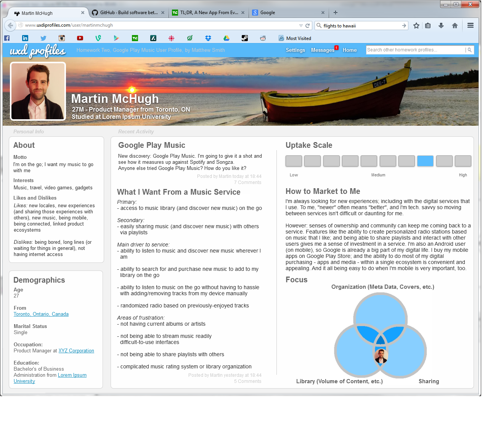

Matthew J. Smith
UX Designer
Toronto
mjs.design draft #2
Other Projects
Deliverables: responsiveness audit, heuristic evaluation, storyboard, user persona
Time to Read: 7 minutes
These are limited-scope works (for school, etc.) that don’t fit neat into individual portfolio pieces.
I haven't numbered them as the other portfolio pieces are numbered, because there is no progression that's represented in these projects. It's a chain of one-offs.
Most of these represented learning; and so aren't necessarily professional-grade works.
Heuristics Evaluation
Heuristics, in UX, are principles of interaction design; that is, rules of thumb for how systems (e.g. websites, apps, etc.) should behave with user interaction.
UX frontiersman Jakob Nielsen, of the Nielsen Norman Group, wrote his list “10 Usability Heuristics for User Interface Design” in 1995; and these are still in current use (I didn't make this; it's a modified list of the original 10 by Scott Klemmer and Janaki Kumar):
I did an heuristic evaluation of two transportation websites – www.greyhound.ca and www.viarail.ca – with Nielsen’s heuristics as a guide (with the heuristic violation, and severity rating for each from 1 (the least severe) to 5 (the most severe).
Site Audits
Knowledge of design is as much about an awareness of good design as it is about an awareness of bad design.
The user doesn’t (always) have the lingo to explain what about an experience is “bad”; e.g. the user doesn’t need to reference CSS media queries or breakpoints to express frustration about a website’s mobile un-friendliness.
As a UX Designer, the skill to audit a design of a website, app, etc. and suggest (or develop) improvements is important.
These are two simple responsiveness audits I did for school: the first is for www.rollingstones.com; and the second is for www.davidbowie.com.
As a caveat: the designs of these websites could have changed in the time since I performed these audits.
Storyboarding
Storyboarding is where a designer illustrates a use case of a product (e.g. website, app, etc.); how a user might engage with the product in certain contexts.
For example, a six-panel storyboard for an Uber-style app might go like:
- 1st panel: user is late for a big date (the user’s problem is identified: he/she needs to get somewhere FAST
- 2nd panel: user attempts to take the bus, but misses it (the user attempts to resolve his/her own problem with a usual method, but fails)
- 3rd panel: user remembers new “taxi app” (the app comes into focus for the user as a potential solution to his/her problem)
- 4th panel: user opens app on his/her mobile (app is shown in simple detail; useful parts of interface only, should show what app does, without graphics or distractions so, e.g., a “find nearest taxi” button is shown)
- 5th panel: driver arrives, banters (“how are you?”, “that was fast!”, whatever; result of the app’s use is shown)
- 6th panel: user arrives for date, pays driver via app (the app solved the user’s problem)
Storyboards are meant to be simple, lo-fi; their purpose is to illustrate use cases and build ideas; not to win awards for creative merit (which, as an awful sketch artist, I’m grateful for).
I made a storyboard for an idea that I had for LED panels for at bus stops / subway stations that state the capacities of upcoming busses/subways on their routes.
It’s a fanciful idea – I don’t pretend to understand the tech. requirements for a system like this – but it could illustrate the value of storyboards to the design process.


User Personas
The development of good, user-aware personas is an important skill for UX Designers.
“Who are our users?” is a fundamental question of smart design.
For example: if I were to design a mobile application for users to report automobile accidents to their insurance provider, I might develop a fake user called Ben Disraeli who:
- is a 40-year-old boat salesman
- considers himself a great driver
- has low-to-moderate tech. skills
- is impatient
- is frugal
- is in love with his car; and puts a lot of care in to it
Picture Ben after a small automobile accident. He’s anxious: concerned about his car, and about the cost (insurance premiums, his time, etc.).
He gets on his phone; and decides to use the app instead of a phone call.
How does the app onboard Ben? He’s rattled: he doesn’t want to scroll through a bunch of tutorial slides; he wants to sign-in, or register. If it’s the latter, he doesn’t want to fill out a huge form with two “Enter a secret question…” fields; he wants to enter his name, his insurance number and a password. Task reduction is golden for Ben, here.
Because Ben is anxious, content/visual design that suggests reassurance, calmness, etc., and is jargon-free, would be of benefit to his experience.
Once Ben’s inside the interface, he wants to submit a claim and expects to see a button to do that; a loud “SUBMIT CLAIM”, which leads to an organized, well-labelled form for pertinent, immediate-need information above a large “SUBMIT” button with a message like “Your insurance agent has received your form and will take it from here. Thank you!” and offer Ben follow-up information on completion.
This is an incomplete example, but it should illustrate the importance of user personas (and user stories) to plan designs around.
I’ve included an (unrelated) user persona that I developed for Google Play Music in AxureRP:
I hadn’t developed a full user persona before; and I could’ve dialed down the “social media” pastiche – I spent a lot of time on the fake interface, which was unimportant to the persona itself – but it illustrates what a persona looks like.
Anyway, that's the end of the other products page; but if you're interested, check back periodically to see new additions!